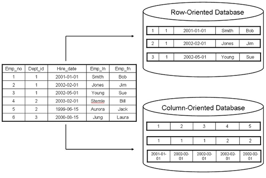
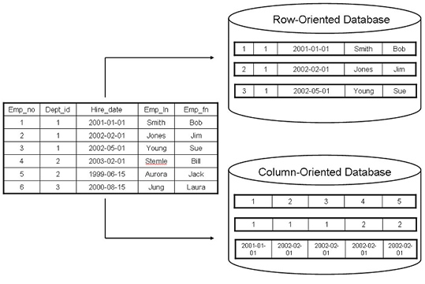

HISTORY
2000 Graphing Databases are invited. A graph database (GDB) is a database that uses graph structures for semantic queries with nodes, edges and properties to represent and store data. When importing data into a graph database, the relationships are treated with as much value as the database records themselves. This allows the engine to navigate your connections between nodes in constant time. That compares favorably to the exponential slowdown of many-JOIN SQL-queries in a relational database. 2007
2007 In 2007, two of the largest NoSQL database providers of 2018 (MongoDB and DynamoDB) began. MongoDB started as part of an open source cloud computing stack and the first standalone release later came in 2009. Additionally a research paper was released on DynamoDB which led to its creation in 2012. DynamoDB is an AWS NoSQL Database that powers websites . MongoDB also powers a wide variety of sites as well ...
- Amazon - Amazon workflow engines run on DynamoDB for millisecond response times, allowing customers to get their orders faster.
- Netflix - Netflix uses DynamoDB to run A/B testing that builds personalized streaming experiences for their 125+ million customers.
- Samsung - Samsung Electronics uses DynamoDB for their petabyte size mobile app backups, resulting in consistent high performance and cost savings.
- Snapchat - Snap migrated their largest storage workload, Snapchat Stories, to DynamoDB and improved performance while reducing cost.
- Tinder - Tinder migrated user data to DynamoDB with zero downtime, and leveraged DynamoDB's scalability to meet the needs of their growing global user base.
- Airbnb - AirBnB uses DynamoDB to scale their operations to a global user base, while optimizing their real-time processing workflows to analyze data.
- Adobe - World's #1 Content Management solution relies on MongoDB for petabyte scale data management in the cloud.
- Ebay - Multinational eCommerce store delivering all media metadata at 99.999% availability.
- Google - MongoDB and Google Compute Engine offer the high performance, reliability and cost-effective scale designed for today's applications.
- Facebook - Facebook adapted the storage engine API, extending MongoDB into new workloads and new capabilities.
- Verizon - MongoDB helps Verizon Wireless get greater value from its data while simultaneously accelerating time-to-market and improving its asset utilization.
- EA - The world's best-selling sports video game franchise relies on MongoDB to scale to millions of players
2009 is the year of Redis. Redis is an open source, in-memory data structure store, used as a database, cache and message broker. It supports data structures such as strings, hashes, lists, sets, sorted sets with range queries, bitmaps, hyperloglogs and geospatial indexes with radius queries.


Contents: ELB acting as a load balancer forwarding requests to EC2 instances. EC2 instances running the application requesting data from ElastiCache and DynamoDB. DynamoDB storing the data used by the application ElastiCache caching read requests to DynamoDB Lambda to invalidate and update the cache whenever an object stored in DynamoDB is created, updated or deleted.
2014 in 2014, Jeff Johnson, a Facebook representative announced the introduction of Apollo at the QCon New York. It is Facebook’s own version of NoSQL databases. This NoSQL database model is a hierarchical storage system. The stored data in the advanced database is available in fragments, just like in region servers. However, the unique feature of the new NoSQL model is its online low latency storage system.
Facebook uses the state machines mostly for load balancing, shard generation and management, coordinating data transactions across machines and data migrations. However, the process is not perfect enough. These state machines can send RPC requests to the remote servers. In addition to that, whenever users need to make changes to the persistent state of data, they need to go through Raft (Raft is an algorithm made by Stanford and is used for fault tolerance... Clarity) and get all other servers to agree.
2018 Just Cloud. We'll get to that.


 
